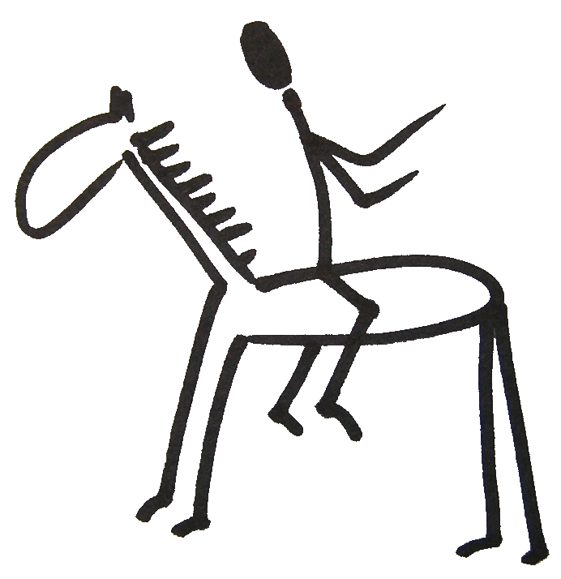
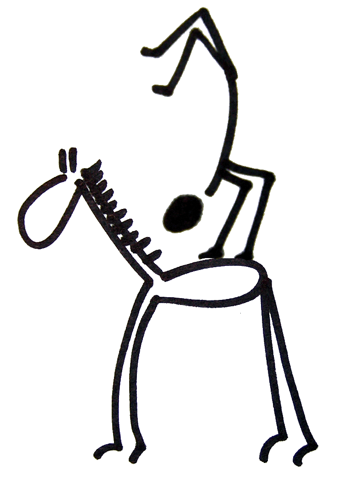

Obecnì o metodì zá¾itkových kurzù
(Pøevzato z Instruktorské knihovny)
Pøístup, který vyu¾íváme na na¹ich programových kursech spadá do ¹iroké oblasti tzv. zá¾itkové pedagogiky. Podstatou je zá¾itek - individuální autentický pro¾itek a z nìj plynoucí zku¹enost.
Na na¹ich kursech do Vás nikdo nebude nìco "hustit slovy". Promlouvat k Vám bude Vá¹ vlastní pro¾itek jazykem va¹ich vlastních emocí, pocitù, "Aha okam¾ikù",...
Dùle¾itou souèástí programu je následná práce s pro¾itky formou spoleèného sdílení a diskusí. Co je to kurs Instruktorù Brno?
Celkovì by se dal kurs pøiblí¾it jako jedineèná - nikdy se neopakující - nìkolikadenní divadelní inscenace, v ní¾ v¹ichni jsou herci i diváci zároveò. Skládá se z pestré mozaiky programù od pohybových aktivit, pøes strategické hry, tvoøivostní dílny a¾ po programy relaxaèní, sebepoznávací a diskusní. (Setkat se tedy mù¾e¹ v podstatì s èímkoli :) ) Tato "inscenace" se odehrává dle pøedem pøipraveného rámcového scénáøe, který je na místì "akènì pøizpùsobován" - ¹it na míru konkrétní skupinì úèastníkù. Kurs pøipravuje tým instruktorù zpravidla ji¾ od podzimu pøedchozího roku ve svém volném èase bez nároku na finanèní odmìnu. (Ale zá¾itky-ty jsou zdarma! :) ) Pro koho je kurs?
Pro ka¾dého bez rozdílu délky nohou, objemu plic, koeficientu IQ, barvy kù¾e v podpa¾dí, názoru na to z které strany se správnì loupe banán (i kdy¾ zde máme jisté preference :) ), vyznání a dal¹ích "individuálních parametrù". Skupina úèastníkù, kteøí se zpravidla na kursu vidí poprvé, bývá 20-30ti èlenná. Sna¾íme se, aby úèastnická skupina byla vyvá¾ená co do poètu mu¾ù a ¾en a co nejpestøej¹í co do vìkového slo¾ení, zájmù, oborù studia, profesí ... Proto pøihlá¹eným posíláme "v¹eteèný dotazníèek" a na základì do¹lých odpovìdí vybíráme tak, aby setkání bylo pro v¹echny co nejpodnìtnìj¹í. O èem kurs je?
Pro¾itek vzniká v akci, ve víru ¾ivota. Proto pouhými slovy nelze popsat o èem kurs je. Sna¾it se o to je podobné jako pokou¹et se pomocí kuchaøského receptu pøiblí¾it druhému chu» babièèiny bábovky. Slova jsou pøíli¹ chabým vyjadøovacím prostøedkem k popisu toho, co se dìje uvnitø nás - k popisu toho, co pro¾íváme. A o tom pøedev¹ím ka¾dý kurs je. Jsou to na¹e vlastní polo¾ené otázky a na¹e vlastní odpovìdi, na¹e hozené rukavice a na¹e roz¹íøené hranice, na¹e nové já, je¾ se vykulilo na svìtlo svìta pøekonáním toho starého. Kurs mù¾e být nádech, znovuzrození, výzva, ale taky klidnì pohodová, pøíjemnì pro¾itá dovolená. Ka¾dému co jeho jest. Co Tì mù¾e potkat?
Pomoci udìlat si pøedstavu by mohlo, kdy¾ naznaèíme, co Tì mù¾e na kursu potkat... ...vyzkou¹í¹ si, ¾e také doká¾e¹ vytvoøit nìco krásného... ocitne¹ se v roli, která pro Tebe bude zbrusu nová... sáhne¹ si na nìkteré dno... roz¹íøí¹ hranice svého pohodlí... bude¹ komunikovat s lidmi, které bys jinak nepotkal a o vìcech, ¾e by Tì to teïka nenapadlo... s nìkým si natolik kápne¹ do noty, ¾e se stanete pøáteli... vyzkou¹í¹ si mno¾ství aktivit, které jsi nikdy v ¾ivotì nedìlal, a mo¾ná i takové, které u¾ léta tou¾í¹ zkusit... dostane¹ se blí¾ sám sobì... a mo¾ná si odpoví¹ na otázky, na které teï "nemá¹ èas" a s novou chutí vykroèí¹ do ¾ivota...
Kdo ví? Jen Ty sám se o tom mù¾e¹ rozhodnout. Pøejeme ¹»astnou volbu!